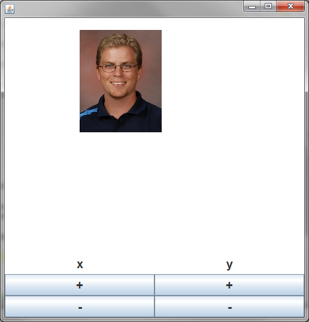

Copy the StampCanvas class below. Notice that it does nothing but paint a
blank Picture.
import sacco.*;
import sacco.gui.*;
public class StampCanvas extends SCanvas
{
private Picture bgPic;
private PaintBrush bgBrush;
public StampCanvas()
{
bgPic = new Picture(500,500);
bgBrush = bgPic.getBrush();
}
public void paintCanvas(PaintBrush brush)
{
brush.drawPicture(bgPic,0,0);
}
//add new methods here
}
In most of the assignments that we've been doing, we've been creating a simple static method that will create the SFrame and all the elements, like so:
public static void main()
{
SFrame frame = new SFrame();
frame.add( new StampCanvas() );
frame.setSize(500,500);
frame.setVisible(true);
}
While this is fine for simple programs, it doesn't help when you want to have a full GUI. Consider the following StampFrame class, which creates a GUI like we used to.
import sacco.*;
import sacco.gui.*;
public class StampFrame implements ButtonListener
{
private SButton reset, circle, square;
private SFrame frame;
public StampFrame()
{
//Construct the frame and buttons
frame = new SFrame();
reset = new SButton("Reset");
circle = new SButton("Circle");
square = new SButton("Square");
//register the button listener
reset.addButtonListener(this);
circle.addButtonListener(this);
square.addButtonListener(this);
//add the buttons to a panel
SPanel buttons = new SPanel();
buttons.setLayout(new FlowLayout());
buttons.add(square);
buttons.add(circle);
buttons.add(reset);
//add the panel to the south of the frame
frame.setLayout(new BorderLayout());
frame.add(BorderLayout.SOUTH,buttons);
}
public void launch()
{
frame.setSize(500,500);
frame.setVisible(true);
}
@Override
public void onButtonPress(SButton source)
{
}
public static void main()
{
StampFrame s = new StampFrame();
s.launch();
}
}
If you run the main method you'll see that it's a simple frame with buttons
on the bottom. Since the StampCanvas extends SCanvas, it can be added to the GUI
just like everything else.
1) Add the following instance field:
private StampCanvas canvas;
2) Go to the very end of the constructor and add the following lines:
canvas = new StampCanvas(); frame.add(BorderLayout.CENTER,canvas);
This constructs the StampCanvas and adds it to the frame.
Running the main method one more time should show an SFrame with a background
that's white, the default color for a blank Picture.
How do we get the buttons to affect the GUI?
The ButtonListener is all set up, but we're not quite ready. First we must add
methods to the StampCanvas that will change the StampCanvas in some way, and
then we can call them from our ButtonListener
Adding the method:
Our first goal is to make it so that when the Square button is pressed, a random
square is drawn on the canvas. Go to the StampCanvas class and add the following
method:
public void randomSquare()
{
int r = (int)(Math.random()*256);
int g = (int)(Math.random()*256);
int b = (int)(Math.random()*256);
Color rand = new Color(r,g,b);
bgBrush.setColor(rand);
int x = (int)(Math.random()*500);
int y = (int)(Math.random()*500);
bgBrush.fillRectangle(x,y,50,50);
}
It uses the bgBrush to draw a random square on the background Picture, but
it's useless unless this method is called.
Linking the method to the button.
Go to the StampFrame class. In the onButtonPress method, add the following:
if(source == square)
{
canvas.randomSquare();
canvas.repaint();
}
This first checks to see if the pressed button was the square button, and
then calls the randomSquare method. Now the GUI elements have an effect on the
SCanvas.
Finishing up the Demo:
Modify the project so that it does the following:
1) When the Circle button is pressed, a random circle should be drawn to the
background
2) When the Reset button is pressed, "erase" everything by filling a giant white
rectangle over everything.
Assignments:
Each of the assignments below will require both a custom SCanvas and a GUI to control it. These are two separate files that will work together. All the GUI elements and ButtonListening will happen in the GUI, all the painting will happen in the custom SCanvas.
The custom SCanvas class should have the paintCanvas methods, the mouseListening methods, and any custom methods that will help change it.
The GUI class should have the GUI components like SButtons and SFrames along with the ButtonListening code.
The onButtonPress method of the GUI should decide which method of the custom SCanvas to call.
ButtonSketch: The ButtonSketch project should function similarly to ColorSketch. The
difference is that there should be a GUI with four SButtons that each represent
a Color.
Pressing the SButton should change the color of the line. Now that the
buttons exist, you no longer have to draw the colored boxes. Create
methods within the canvas that will change the color, and then make a GUI with
buttons that will call those methods.
PicMover: The PicMover's canvas should be displaying a Picture of your choosing (school appropriate). There should be buttons that control the location of the picture. This means that the SCanvas should have variables to represent the x and y, along with methods that change them a little.
